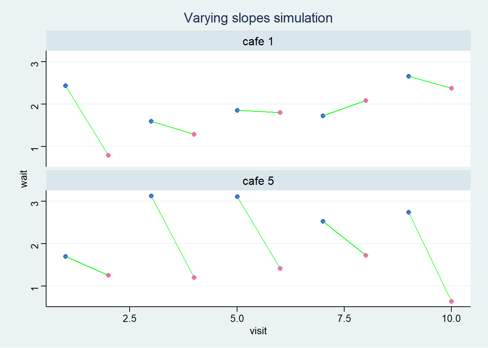

# For execution on a local, multicore CPU with excess RAM
options(mc.cores = parallel::detectCores())
# To avoid recompilation of unchanged Stan programs
rstan_options(auto_write = TRUE)14 Adventures in Covariance
Some options to facilitate the computations
The default theme used by ggplot2
theme_set(ggthemes::theme_stata(base_size = 11, base_family = "sans",
scheme = "s2color"))14.1 Varying slopes by construction
14.1.1 Simulate the population
simCafes <- list()
simCafes <- within(simCafes, {
# a := average morning wait time
# b := average difference afternoon wait time
Mu <- c("a" = 3.5, "b" = -1)
# a := std dev of intercepts
# b := std dev of slopes
sigmas <- c("a" = 1, "b" = 0.5)
# correlation between intercepts and slopes
rho <- -0.7
cov_ab <- prod(sigmas) * rho
})McElreath mentions a difficulty using the matrix function. He misses the argument byrow which resolve this.
# use byrow = TRUE to solve McElrath's issue
matrix(1:4, nrow = 2, ncol = 2, byrow = TRUE) [,1] [,2]
[1,] 1 2
[2,] 3 4we get the covariance matrix sigma as follows
simCafes <- within(simCafes, {
# matrix of correlation
Rho <- matrix(c(1, rho, rho, 1), nrow = 2)
# covariance matrix
Sigma <- diag(sigmas) %*% Rho %*% diag(sigmas)
})and we simulate the bivariate normal distribution
simCafes <- within(simCafes, {
n_cafes <- 20
set.seed(1409)
vary_effects <- MASS::mvrnorm(n = n_cafes, mu = Mu, Sigma = Sigma) |>
as.data.frame() |>
mutate(cafe = seq_len(n_cafes)) |>
relocate(cafe)
})
# glimpse(simCafes$vary_effects)and we plot the simulated data which represents the intercept and slope
simCafes$vary_effects |>
ggplot(aes(x = a, y = b)) +
geom_point(shape = 1, size = 3, color = "purple") +
lapply(X = 1:5 / 5, FUN = function(x) {
stat_ellipse(type = "norm", level = x, linetype = "dotted", size = 0.25)}) +
theme(legend.position = "none") +
labs(title = sprintf("Distribution of intercept and slopes for %d cafes",
simCafes$n_cafes),
x = "intercepts (a_cafe)", y = "slope (b_cafe)")Warning: Using `size` aesthetic for lines was deprecated in ggplot2 3.4.0.
ℹ Please use `linewidth` instead.
14.1.2 Simulate the observations (visits by cafe)
Now using the simulated intercepts and slopes, we create the simulated visits to each cafe.
simCafes <- within(simCafes, {
n_visits <- 10 # nb of visits to each cafe by robot
sigma <- 0.5 # std dev within cafes
set.seed(1409)
data <- vary_effects |>
expand(nesting(cafe, a, b), visit = seq_len(n_visits)) |>
mutate(afternoon = rep(0:1, times = n()/2)) |>
mutate(mu = a + b * afternoon) |>
mutate(wait = rnorm(n = n(), mean = mu, sd = sigma))
})
# glimpse(simCafes$vary_effects)
# glimpse(simCafes$data)and plot the simulated observations.
simCafes$data |>
mutate(afternoon = if_else(afternoon == 0, "M", "A"),
day = rep(rep(1:5, each = 2), times = simCafes$n_cafes),
label = paste("cafe", simCafes$data$cafe)) |>
filter(cafe %in% c(1, 5)) |>
ggplot(aes(x = visit, y = wait, group = day)) +
geom_point(aes(color = afternoon), size = 2) +
geom_line(color = "green") +
scale_color_manual(values = c("M" = "royalblue", "A" = "hotpink")) +
theme(legend.position = "none") +
labs(title = "Varying slopes simulation") +
facet_wrap(~ label, ncol = 1)
14.1.3 The varying slopes model
14.1.3.1 The model
\[ wait_i \sim \mathcal{N}(\mu_i, \sigma) \\ \mu_i = \alpha_{cafe[i]} + \beta_{cafe[i]} \cdot afternoon_i \\ \begin{bmatrix} \alpha_{cafe} \\ \beta_{cafe} \end{bmatrix} \sim \mathcal{MVNormal}( \begin{bmatrix} \alpha \\ \beta \end{bmatrix} , \textbf{S} ) \\ \Sigma = \begin{bmatrix} \sigma_{\alpha} & 0 \\ 0 & \sigma_{\beta} \end{bmatrix} \begin{bmatrix} 1 & \rho \\ \rho & 1 \end{bmatrix} \begin{bmatrix} \sigma_{\alpha} & 0 \\ 0 & \sigma_{\beta} \end{bmatrix} \\ \alpha \sim \mathcal{N}(0, 10) \\ \beta \sim \mathcal{N}(0, 10) \\ \sigma \sim \mathcal{HalfCauchy}(0, 1) \\ \sigma_{\alpha} \sim \mathcal{HalfCauchy}(0, 1) \\ \sigma_{\beta} \sim \mathcal{HalfCauchy}(0, 1) \\ \begin{bmatrix} 1 & \rho \\ \rho & 1 \end{bmatrix} \sim \mathcal{LKJcorr}(K=2, \eta=2) \]
tictoc::tic(msg = sprintf("run time of %s, use the cache.", "60 secs."))
fit14_01 <- xfun::cache_rds({
out <- brm(
data = simCafes$data,
family = gaussian,
formula = wait ~ 1 + afternoon + (1 + afternoon | cafe),
prior = c(
prior(normal(5, 2), class = Intercept),
prior(normal(-1, 0.5), class = b),
prior(exponential(1), class = sd),
prior(exponential(1), class = sigma),
prior(lkj(2), class = cor)),
sample_prior = TRUE,
iter = 1000, warmup = 500, chains = 2,
cores = detectCores(), seed = 1423)
add_criterion(out, c("loo", "waic"))},
file = "ch14_fit14_01", rerun = FALSE)
tictoc::toc()run time of 60 secs., use the cache.: 0.17 sec elapsedpost14_01 <- list()
post14_01 <- within(post14_01, {
prior <- prior_draws(x = fit14_01)
post <- tidy_draws(model = fit14_01)
# dataframe of correlations to plot
corr = data.frame("value" = c(prior$cor_cafe, post$cor_cafe__Intercept__afternoon),
"id" = c(rep("prior", nrow(prior)), rep("post", nrow(post))))
coefs <- fit14_01 |>
spread_draws(b_Intercept, b_afternoon, r_cafe[cafe, term]) |>
pivot_wider(id_cols = c("b_Intercept", "b_afternoon", "cafe"),
names_from = "term", values_from = "r_cafe") |>
group_by(cafe) |>
summarize(b_Intercept = mean(b_Intercept), b_afternoon = mean(b_afternoon),
r_afternoon = mean(afternoon), r_Intercept = mean(Intercept)) |>
mutate(Intercept = b_Intercept + r_Intercept,
afternoon = b_afternoon + r_afternoon) |>
select(cafe, Intercept, afternoon) |>
identity()
all <- simCafes$vary_effects |>
rename("Intercept" = a, "afternoon" = b)
all <- bind_rows("real" = all, "post" = coefs, .id = "id")
})Warning: `gather_()` was deprecated in tidyr 1.2.0.
ℹ Please use `gather()` instead.
ℹ The deprecated feature was likely used in the tidybayes package.
Please report the issue at <https://github.com/mjskay/tidybayes/issues/new>.# glimpse(post14_01$post)
# glimpse(post14_01$coefs)
# glimpse(post14_01$all)plot14_01 <- list()
plot14_01 <- within(plot14_01, {
cor <- post14_01$corr |>
ggplot(aes(x = value, color = id, linetype = id)) +
geom_density(size = 1, adjust = 0.75) +
scale_color_manual(values = c("prior" = "black", "post" = "blue")) +
scale_linetype_manual(values = c("prior" = "longdash", "post" = "solid")) +
theme(legend.position = c(0.8, 0.8), legend.title = element_blank()) +
labs(title = "Posterior and Prior distribution of the correlation",
x = "correlation")
})
plot14_01$cor
pred14_01 <- list()
pred14_01 <- within(pred14_01, {
pred_df <- simCafes$data |>
group_by(cafe, afternoon) |>
summarise(mwait = mean(wait)) |>
add_predicted_draws(object = fit14_01) |>
mean_qi(.width = 0.89) |>
mutate(term = if_else(afternoon == 0, "Intercept", "afternoon"))
real <- pred_df |>
select(cafe, term, mwait) |>
pivot_wider(id_cols = cafe, names_from = term, values_from = mwait)
pred <- pred_df |>
select(cafe, term, .prediction) |>
pivot_wider(id_cols = cafe, names_from = term, values_from = .prediction)
all <- bind_rows("real" = real, "pred" = pred, .id = "id")
})`summarise()` has grouped output by 'cafe'. You can override using the
`.groups` argument.# glimpse(pred14_01$all)
# glimpse(simCafes$data)plot14_01 <- within(plot14_01, {
coefs <- post14_01$all |>
ggplot(mapping = aes(x = Intercept, y = afternoon, group = cafe, color = id)) +
lapply(X = 1:5 / 5, FUN = function(x) {
stat_ellipse(data = post14_01$all, mapping = aes(x = Intercept, y = afternoon),
inherit.aes = FALSE,
geom = "polygon", type = "norm", level = x, linewidth = 1/5,
color = "dodgerblue", fill = "transparent")}) +
geom_point() +
geom_line(color = "black") +
scale_color_paletteer_d("awtools::spalette", direction = 1) +
theme(legend.position = c(0.2, 0.2),
legend.title = element_blank()) +
labs(title = "Coefficients and shrinkage",
x = "Intercept", y = "Slope")
wait <- pred14_01$all |>
ggplot(mapping = aes(x = Intercept, y = afternoon, group = cafe, color = id)) +
lapply(X = 1:5 / 5, FUN = function(x) {
stat_ellipse(data = pred14_01$all, mapping = aes(x = Intercept, y = afternoon),
inherit.aes = FALSE,
geom = "polygon", type = "norm", level = x, linewidth = 1/5,
color = "dodgerblue", fill = "transparent")}) +
geom_point() +
geom_line(color = "black") +
scale_color_paletteer_d("awtools::spalette", direction = -1) +
theme(legend.position = c(0.8, 0.2),
legend.title = element_blank()) +
labs(title = "Waiting time and shrinkage",
x = "morning wait", y = "afternoon wait")
})
# plot14_01$coefs
wrap_plots(plot14_01[c("coefs", "wait")]) +
plot_annotation(title = "Shrinkage in two dimensions")
14.2 Advanced varying slopes
data(chimpanzees)
dataChimp <- chimpanzees |>
mutate(block = factor(block),
actor = factor(actor),
treatment = factor(1 + prosoc_left + 2 * condition, levels = 1:4,
labels = c("AR", "AL", "PR", "PL")))
rm(chimpanzees)
dataChimp |>
skim() |>
mutate(across(.cols = where(is.numeric), .fns = round, digits = 2))| Name | dataChimp |
| Number of rows | 504 |
| Number of columns | 9 |
| _______________________ | |
| Column type frequency: | |
| factor | 3 |
| numeric | 6 |
| ________________________ | |
| Group variables | None |
Variable type: factor
| skim_variable | n_missing | complete_rate | ordered | n_unique | top_counts |
|---|---|---|---|---|---|
| actor | 0 | 1 | FALSE | 7 | 1: 72, 2: 72, 3: 72, 4: 72 |
| block | 0 | 1 | FALSE | 6 | 1: 84, 2: 84, 3: 84, 4: 84 |
| treatment | 0 | 1 | FALSE | 4 | AR: 126, AL: 126, PR: 126, PL: 126 |
Variable type: numeric
| skim_variable | n_missing | complete_rate | mean | sd | p0 | p25 | p50 | p75 | p100 | hist |
|---|---|---|---|---|---|---|---|---|---|---|
| recipient | 252 | 0.5 | 5.00 | 2.00 | 2 | 3.00 | 5.0 | 7.00 | 8 | ▇▃▃▃▇ |
| condition | 0 | 1.0 | 0.50 | 0.50 | 0 | 0.00 | 0.5 | 1.00 | 1 | ▇▁▁▁▇ |
| trial | 0 | 1.0 | 36.50 | 20.80 | 1 | 18.75 | 36.5 | 54.25 | 72 | ▇▇▇▇▇ |
| prosoc_left | 0 | 1.0 | 0.50 | 0.50 | 0 | 0.00 | 0.5 | 1.00 | 1 | ▇▁▁▁▇ |
| chose_prosoc | 0 | 1.0 | 0.57 | 0.50 | 0 | 0.00 | 1.0 | 1.00 | 1 | ▆▁▁▁▇ |
| pulled_left | 0 | 1.0 | 0.58 | 0.49 | 0 | 0.00 | 1.0 | 1.00 | 1 | ▆▁▁▁▇ |
14.2.0.1 The model
$$ L_i (1, p_i) \ logit(p_i) {treatment[i]} + {actor[i], treatment[i]} + {block[i], treatment[i]} \ {treatment[i]} (0, 1), , i = 1 4 \
\[\begin{bmatrix} \alpha_{j, 1} \\ \alpha_{j, 2} \\ \alpha_{j, 3} \\ \alpha_{j, 4} \end{bmatrix}\] ( \[\begin{bmatrix} 0 \\ 0 \\ 0 \\ 0\\ \end{bmatrix}\] , \[\begin{bmatrix} \beta_{j, 1} \\ \beta_{j, 2} \\ \beta_{j, 3} \\ \beta_{j, 4} \end{bmatrix}\] ( \[\begin{bmatrix} 0 \\ 0 \\ 0 \\ 0\\ \end{bmatrix}\], \bf{R} (K=2, ) $$
We don’t do model m14.2 since it is only done to illustrate centralized vs non-centralized parametrization and that brms uses only non-centralized parametrization.
tictoc::tic(msg = sprintf("run time of %s, use the cache.", "80 secs."))
fit14_03 <- xfun::cache_rds({
out <- brm(
data = dataChimp,
family = bernoulli,
formula = bf(pulled_left ~ 0 + treatment + (0 + treatment | actor) + (0 + treatment | block)),
prior = c(
prior(normal(0, 1), class = b),
prior(exponential(1), class = sd, group = actor),
prior(exponential(1), class = sd, group = block),
prior(lkj(2), class = cor, group = actor),
prior(lkj(2), class = cor, group = block)),
iter = 1000, warmup = 500, chains = 2,
cores = detectCores(), seed = 1427)
add_criterion(out, c("loo", "waic"))},
file = "ch14_fit14_03", rerun = FALSE)
tictoc::toc()run time of 80 secs., use the cache.: 0.2 sec elapsedplot14_03 <- list()
plot14_03 <- within(plot14_03, {
dataEPredicted <- expand_grid(actor = unique(dataChimp$actor),
treatment = unique(dataChimp$treatment),
block = unique(dataChimp$block)) |>
# dataPredicted <- dataChimp |>
add_epred_rvars(fit14_03) |>
mutate(actor_id = paste("actor", actor),
condition = if_else(substring(treatment, 1, 1) == "A", "alone", "partner"),
condition = as.factor(condition),
prosoc_left = if_else(substring(treatment, 2, 2) == "R", "right", "left"),
prosoc_left = as.factor(prosoc_left)) |>
select(-treatment) |>
group_by(actor, condition, prosoc_left) |>
mean_qi(.epred, .width = 0.89) |>
identity()
plotEPredicted <- ggplot(dataEPredicted,
aes(x = condition, y = .epred,
group = prosoc_left, color = prosoc_left,
fill = prosoc_left)) +
geom_line(size = 1) +
geom_point() +
geom_errorbar(aes(ymin = .lower, ymax = .upper), width = 1/3) +
geom_hline(yintercept = 0.5, color = "brown", linetype = 2) +
# ggrepel::geom_text_repel(aes(label = round(.epred, 2)), size = 3) +
scale_y_continuous(labels = scales::label_percent()) +
coord_cartesian(ylim = c(0, 1)) +
theme(legend.position = "bottom") +
labs(title = "Posterior expected predictions with 89% CI",
x = NULL, y = "proportion pulled left") +
facet_grid(. ~ actor_id)
})
plot14_03$plotEPredicted